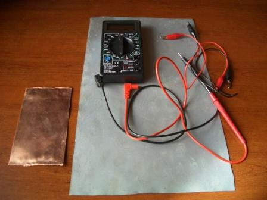
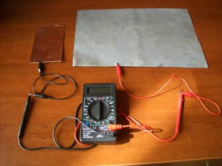
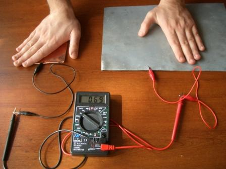

🎯 Deneyin Amacı
İnsan vücudu üzerinden elektrik elde edilmesinin gösterilmesi.
🧰 Gerekli Malzemeler
1. Bakır plaka
2. Çinko plaka
3. Mikro ampermetre

🧪 Deneyin Yapılışı
Ampermetrenin (+) ucu bakır plakaya, (-) ucu çinko plakaya bağlanır.
Bir el çinko plakaya, diğer el bakır plakaya konur.
Devre tamamlandığında ampermetrenin saptığı gözlemlenir.


🧠 Deneyin Fiziği
Bir elektrolit içine iki farklı metal yerleştirildiğinde basit bir pil oluşur. Bu düzeneğe volta pili denir.
Çinko atomları çözeltide iyonlaşarak elektron verir ve negatif kutup olur. Bakır ise pozitif kutup görevi görür.
Elektronlar çinkodan bakıra doğru hareket ederek elektrik akımı oluşturur.
Bu deneyde elektrolit yerine insan vücudu kullanılır. Vücuttaki sıvılar ve iyonlar iletken gibi davranır.
Bu nedenle devre insan üzerinden tamamlanır ve akım oluşur.
Farklı metallerin elektronegatiflik farkı nedeniyle potansiyel fark oluşur ve ampermetre sapar.
⚠️ Önemli Not
Oluşan akım çok küçüktür ve insan sağlığı açısından güvenlidir.
🎬 Deney Videosu